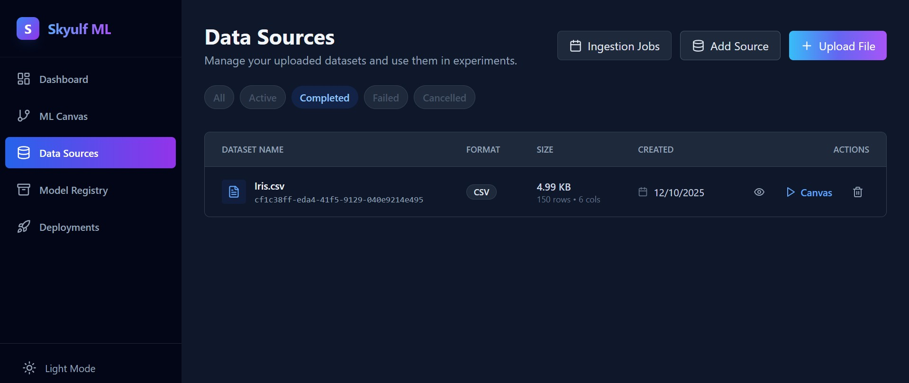
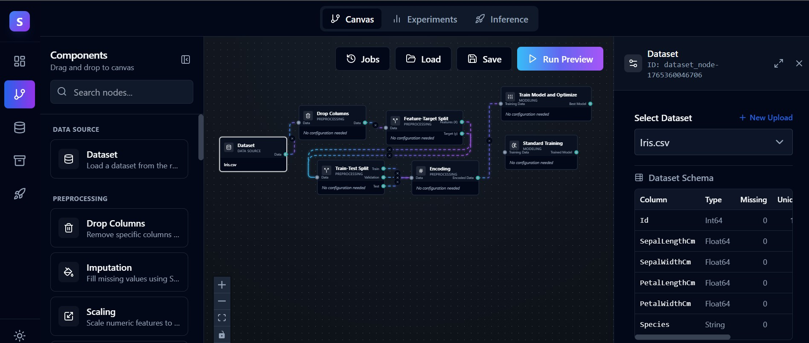
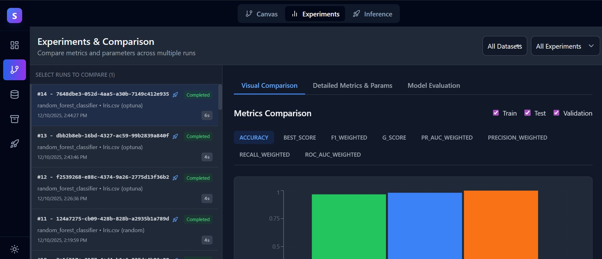
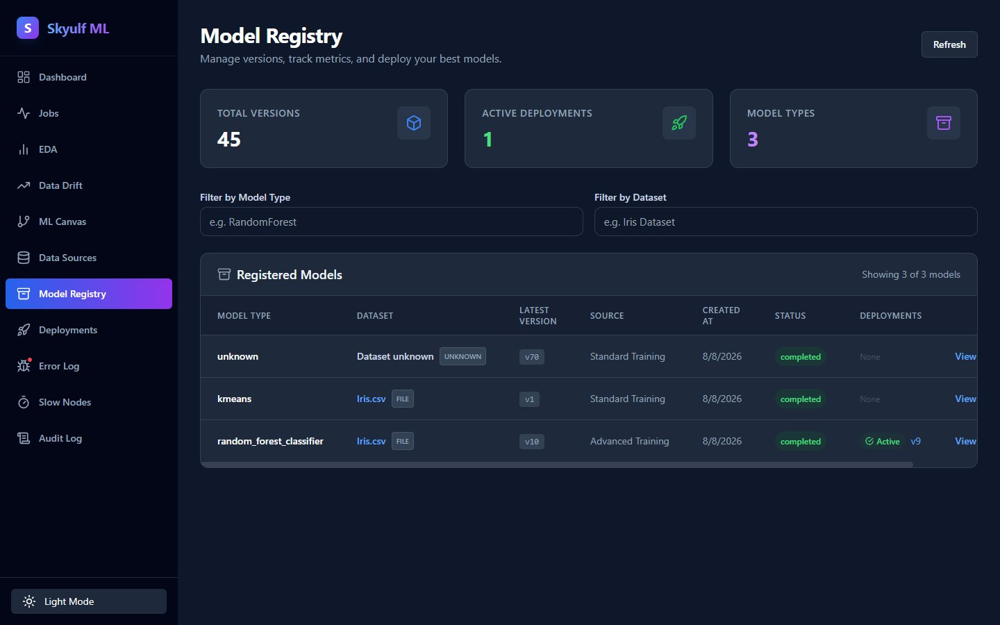
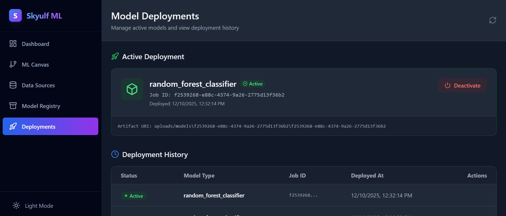
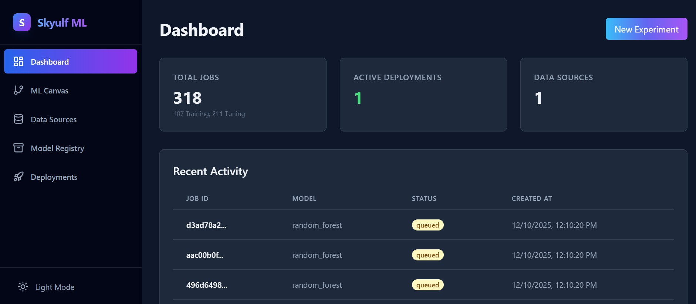
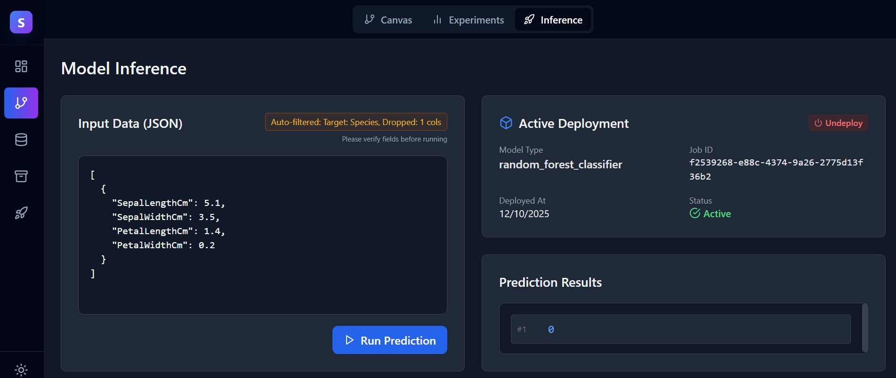
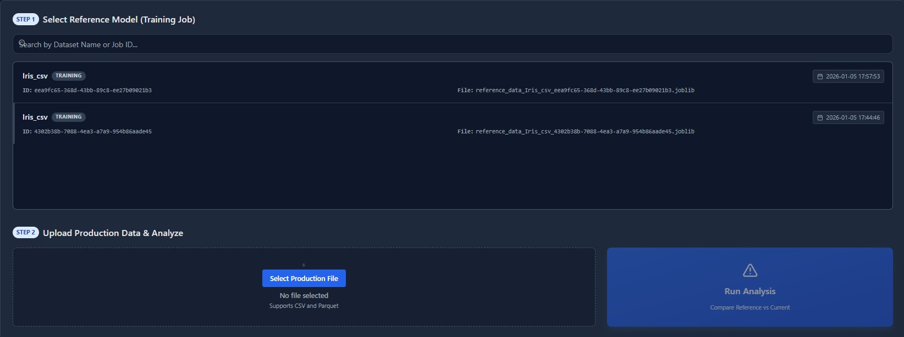
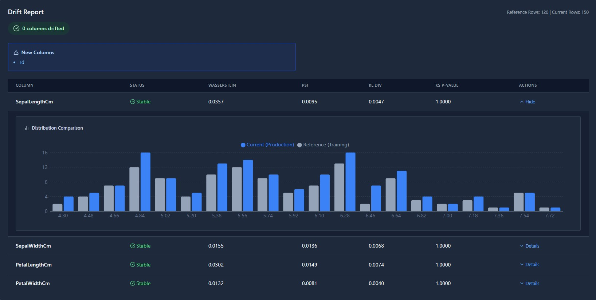

ISSUED TODAY · 0000 UTC --:--:-- UTC · RADIO SKYULF, LONG WAVE
GALE WARNINGS IN FORCE: DRIFT LOWVIGILANCE AREA: PRODUCTION MODELSNEXT ISSUE: CONTINUOUS
Synopsis: the ML lifecycle, read like weather
SYNOPSIS · ISSUED 0000 UTC —
Low “DRIFT LOW”, centred over production, is expected to deepen wherever models go unwatched.
Skyulf is the standing forecast for it: one platform connecting data exploration, pipelines, training,
comparison, deployment and monitoring. Observe from the coastal station — the self-hosted visual
node-canvas — or take instruments to sea with skyulf-core, the independent Apache-2.0 Python
package for scripts and notebooks. Every visual workflow exports to Jupyter, full or compact.
Nothing is trapped in the canvas. For data scientists, ML engineers, developers and product teams
who refuse black-box SaaS. The demo requires no signup.
SURFACE ANALYSIS — ISOBARS EVERY 4 hPa, 996 AT THE CENTRE OF DRIFT LOW OUT TO 1028. FRONT SYMBOLS ARE PLOTTED ON THE
DIRECTION-OF-MOTION SIDE: WARM FRONT RUNNING EAST THEN NORTH-EAST, COLD FRONT TRAILING SOUTH-WEST. STATION FIGURES:
PRESSURE IN HECTOPASCALS (LAST THREE DIGITS), TEMPERATURE IN °C.
Forecast areas, in bulletin order
Eight sea areas, one lifecycle: ingest, exploration, pipelines, training, comparison, registry, deployment, monitoring.
Read them as the forecast reads them — each with its own observation plate, taken from the real product.
AREA 01INGEST — WHERE THE WEATHER BEGINS
Every forecast starts with observations. Skyulf takes in CSV, Excel, JSON and Parquet files,
or reads directly from S3-compatible storage. Local disk or object bucket — the sea state arrives
as it is, without ceremony and without lock-in.
OBSERVATION 0000 UTC · FORMATS: CSV / XLSX / JSON / PARQUET · STORAGE: LOCAL / S3-COMPATIBLE

OBSERVATION PLATE 01 — DATA SOURCES: FILES AND S3-COMPATIBLE STORAGE, ONE VIEW OF THE WATER.
WIND SOUTHWESTERLY 4 · DATA VEERING IN
AREA 02EXPLORATION — READING THE SEA STATE
Automated EDA runs on contact: statistical profiling, distributions, correlations, outliers,
segmentation, causal discovery and target analysis. Read the water before you sail it —
soundings first, course second.
OBSERVATION PLATE 02 — EDA DASHBOARD: PROFILING, DISTRIBUTIONS AND TARGET ANALYSIS IN ONE PASS.
SOUNDING COMPLETE · WIND WESTERLY 3, GENTLE
AREA 03PIPELINES — CHARTING THE COURSE
Node-based pipelines on a visual canvas: preprocessing, feature engineering, splitting and
modelling, wired together node by node. And the course is never drawn in ink you can’t erase —
every canvas workflow exports to a Jupyter notebook, full or compact. Nothing is trapped in the canvas.
COURSE LAID DOWN · PREPROCESSING / FEATURE ENGINEERING / SPLITTING / MODELLING · EXPORT: JUPYTER (FULL OR COMPACT)

OBSERVATION PLATE 03 — PIPELINE CANVAS: NODES WIRED FROM INGEST TO MODEL.
COURSE SET · SOUTHWESTERLY 5, FRESH
AREA 04TRAINING — ENGINES BELOW DECK
Training runs in the background: Celery with Redis when you want the full engine room,
background threads when you want it light. Jobs queue, run and report back —
while the watch stays on deck.
OBSERVATION PLATE 04 — JOBS BOARD: BACKGROUND TRAINING RUNS AND THEIR STATES.
ENGINES RUNNING · WESTERLY 6, STRONG
AREA 05COMPARISON — LOGS SIDE BY SIDE
Every run is a ship’s log. Experiment comparison lines candidates up so you can read runs
side by side and choose the one that will hold in heavy weather — on the evidence, not on instinct.
LOGS OPEN · EXPERIMENTS COMPARED RUN BY RUN

OBSERVATION PLATE 05 — EXPERIMENT COMPARISON: RUNS LINED UP, NUMBERS SIDE BY SIDE.
LOGS COMPARED · WIND WEST-SOUTHWEST 4
AREA 06REGISTRY — THE REGISTER OF SHIPS
The model registry keeps every trained model on the books — named, versioned and ready for
deployment. What was built, and when, stays on the record.
REGISTER · MODELS ON THE BOOKS, VERSIONED, READY FOR DEPLOYMENT

OBSERVATION PLATE 06 — MODEL REGISTRY: TRAINED MODELS ON THE BOOKS.
REGISTERED · SOUTHWESTERLY 3, EASING
AREA 07DEPLOYMENT — PUTTING OUT TO SEA
Deploy from the registry and serve real predictions. Deployment and inference are first-class
in Skyulf — not an export destination bolted on afterwards.
UNDERWAY · DEPLOYMENT FROM REGISTRY · INFERENCE LIVE IN SERVICE

OBSERVATION PLATE 07 — DEPLOYMENT: A REGISTERED MODEL, LIVE IN SERVICE.
UNDERWAY · WESTERLY 5 · BAROMETER FALLING
AREA 08MONITORING — THE WATCH KEEPS WATCHING
Drift monitoring, audit history and diagnostics: the platform keeps observing conditions long
after launch. When the data weather changes, the watch knows — before the storm reaches production.
WATCH BILL · DRIFT MONITORING / AUDIT HISTORY / DIAGNOSTICS · CONTINUOUS

OBSERVATION PLATE 08 — MONITORING DASHBOARD: LIVE CONDITIONS ACROSS DEPLOYED MODELS.
Decorative divider drawn in the style of a warm front, semicircles pointing down the page.
Two ways to keep the watch — equal instruments
Skyulf ships as two first-class interfaces. Same engine, two observation methods — choose by where
you are standing. Neither is a second-class citizen of the other.
OBSERVATION METHOD I
Coastal observatory — the visual platform
The self-hosted node-canvas platform: explore, wire, train and deploy on a chart you can stand
over. Bring the whole station up with Docker Compose. SQLite to start, PostgreSQL at scale;
keep files on local disk or S3-compatible storage.
$ git clone https://github.com/flyingriverhorse/Skyulf
$ docker compose up
SMART INSIGHTS — THE OBSERVATORY’S OWN NOTES ON YOUR DATA.
The independent Apache-2.0 Python package. The same lifecycle engine, usable in plain
scripts and notebooks — no canvas required, no lock-in possible.
$ pip install skyulf-core

INFERENCE FROM A SCRIPT — PREDICTIONS SERVED FROM THE SHIP’S OWN INSTRUMENTS.
Visual work and script work are equal citizens: the canvas exports to notebooks, and the package
needs no canvas at all.
Decorative divider drawn in the style of a cold front, triangles pointing down the page.
GALE WARNING · ISSUED 0000 UTC · ALL AREAS
Gale warning — drift is a deepening low
FEATURE DISTRIBUTION SHIFTING ACROSS PRODUCTION AREAS.
DRIFT LOW, CENTRED OVER DEPLOYED MODELS, EXPECTED TO DEEPEN WHERE NO WATCH IS KEPT.
VISIBILITY IN THE TRAINING BASELINE: GOOD. VISIBILITY IN LIVE DATA: DETERIORATING.
This is the honest part of the metaphor: drift monitoring is forecasting. Skyulf watches live
data the way a station watches the barometer — distributions moving, correlations loosening — and keeps the
audit history and diagnostics to show what changed and when. You see conditions change.
You act before the storm hits production.

WARNING PLATE A — DRIFT SIGNALS ACROSS LIVE FEATURES.

WARNING PLATE B — DRIFT REPORT: LIVE DISTRIBUTIONS AGAINST THE TRAINING BASELINE.
What the warning covers
Drift monitoring
Feature and behaviour drift watched continuously after deployment — the forecast that keeps running.
Audit history
Every change on the record: what shifted, when, and what was done about it.
Diagnostics
The instruments to find the cause, not just the symptom, when conditions turn.
Decorative: a night sky with stars and a moon.
The night watch — entry points
The forecast office is open through the night. Stand the watch from wherever you are —
every signal below is live.
SIGNAL 1 · HOSTED DEMO
Read a live deployment before you build anything.
No signup, no install. api.skyulf.com
SIGNAL 2 · PYTHON INSTRUMENTS
pip install skyulf-core The independent Apache-2.0 package — scripts and notebooks, your own environment.